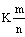

Keystroke: [Ctrl] [Shift] [=]

Returns the value of k + m/n, allowing you to write numbers like 2½.
k, m and n are integers.
To display results in mixed number format, use the settings in the Result Format dialog.